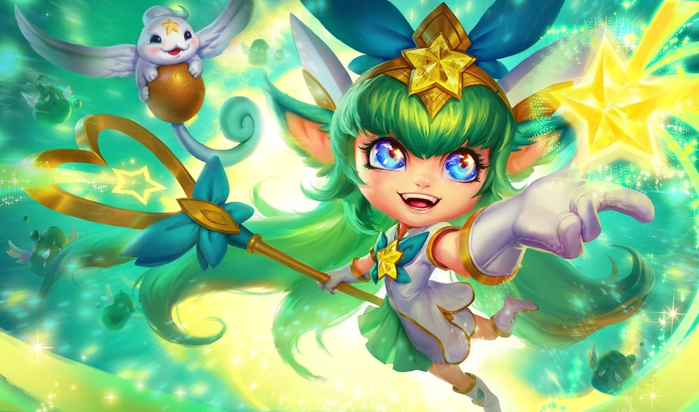
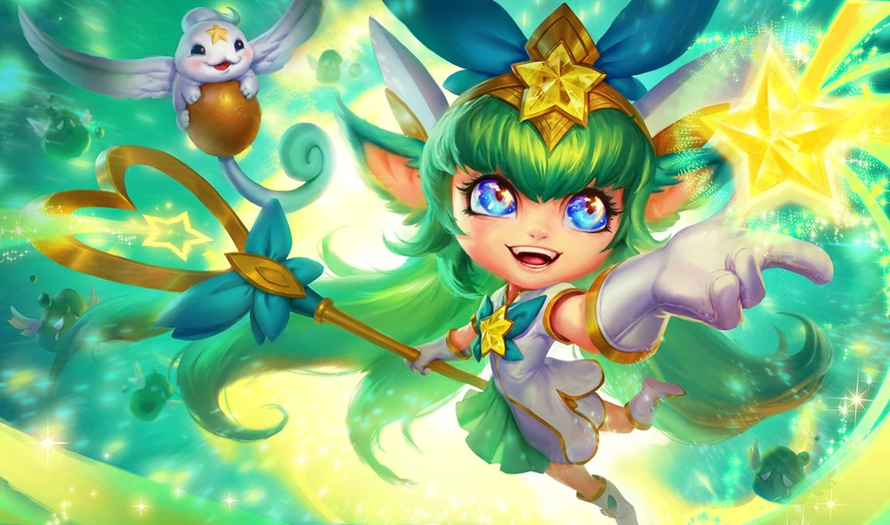

-
Star Guardian
Star Guardian is a series that follow the story of a group of high school students who choose to become cosmic protectors and must battle cosmic enemies threatening the universe.


 



Star Guardian Rakan
Many years ago, Rakan was destroyed in the fight against Zoe, alongside his lover Xayah. The pair were then resurrected and turned against their allies -- a fact Rakan seems keenly aware of. Biding his time to strike, he has a plan to purify the darkness from Xayah's heart... though the price may be losing himself to evil forever.
Star Guardian Xayah
Many years ago, Xayah was destroyed in the fight against Zoe, alongside her lover Rakan. The pair were then resurrected and turned against their allies -- a change Xayah seems almost happy about. Blaming the Star Guardians for abandoning her to die, she has taken a bitter, personal stand against them, even as doubts begin to creep in...Star Guardian Zoe
A member of the ancient, first group of Star Guardians, Zoe's heart desired not love, but chaos -- twisting her newfound power into a malignant expression of cosmic madness. After numberless eons of hunting the First Star's chosen, she has finally come to Valoran City, hoping to destroy the latest generation of Guardians as she has countless others.
Star Guardian Ahri
Ahri is a charismatic team captain who leads her group of Star Guardians from the outer cosmos, with the authority of a queen bee and the sly cunning of a fox. She's effortlessly popular, with an irresistible charm that disarms friends and foes alike.
Star Guardian Ezreal
With a boundless curiosity about the universe, Ezreal is a born explorer, and becoming a Star Guardian only served to fuel his appetite for discovery. Though known to wander off, he always returns when most needed, especially now, as a certain pink-haired Guardian from another team has caught his attention…Star Guardian Janna
Soft-spoken and sometimes distant, Janna serves as mentor to her younger team and gently guides them towards a true understanding of their destiny. While she rarely offers information about her mysterious past, her poise and quiet strength are deeply admired by her Star Guardian teammates.
Star Guardian Jinx
Much to the annoyance of her team, Jinx is an impulsive and sometimes cynical Star Guardian who loves a good, glittery explosion. However, when the fighting starts, Jinx will throw herself into the battle to protect others, especially her childhood friend Lux.Star Guardian Lulu
The youngest member of Lux's team, Lulu is an odd but gifted Star Guardian. Though her unique relationship with the Starlight is sometimes puzzling, Lulu can be counted on to support her team—and let them know that the light supports them, too.Star Guardian Lux
Cheerful and courageous, Lux shines the brightest among her Star Guardian team. While young and inexperienced, the pink-haired captain's optimism inspires others in their destiny to protect the universe. She truly believes that as long as they fight together, there is no darkness they can't overcome.Star Guardian Miss Fortune
Second in command to Ahri, Miss Fortune is a hot-headed Star Guardian gunslinger from the galactic rim. She is the first to charge into battle with her twin pistols, often ignoring her own safety as long as she can take down every enemy in sight.Star Guardian Neeko
A member of Ahri's original team of Star Guardians, Neeko watched her teammates fall against Zoe's dark powers, going into hiding when she, too, was thought dead. Revealing herself to the newly assembled Star Guardians at the eve of their greatest battle, the wide-eyed adventurer has vowed that this time, she won't run.Star Guardian Poppy
Fierce and no-nonsense, Poppy is often the first Star Guardian on the battle lines, ready to put her duty before everything else. With her trusty hammer, Poppy sees the universe as black and white: you're either here to smash anything that threatens the sanctity of the cosmos, or you're getting smashed.
Star Guardian Soraka
A gentle soul with a mysterious origin among the stars, Soraka protects her team from behind the frontlines. Despite her shy appearance, she carries immense healing power and an unprecedented command of the Starlight, more than any other Star Guardian her team has encountered.Star Guardian Syndra
Feared and admired, Syndra is a formidable Star Guardian from an earlier era, whose history is cloaked in shadow. She acts as an advisor on Ahri's team, but despite her captain's trust, some members suspect there is no price that Syndra won't pay to achieve her personal ambitions.Pajama Guardian Ezreal
The First Star has burdened Ezreal with a lot. The responsibility. The hefty weight of destiny. The sparkly outfit (he's used to it). “Attending a slumber party” was definitely not on the list of expected cosmic duties. Not that he minds, really… as long as they don't actually try to braid his hair.
Pajama Guardian Lulu
Fuzzy onesies! Paper fortune tellers! Cuddly, incoming! Lulu's so ready for this slumber party. Even Pix is excited, and getting into the spirit of things. Star Guardians are destined to protect the universe—but that doesn't mean they can't have a little fun along the way!Pajama Guardian Lux
As captain of her Star Guardian team, Lux knows the importance of a little R&R. As host of the party, though, she's still working on the relaxation part. It's hard to cut loose—especially when a certain handsome blond Guardian keeps flashing that charming grin!—but Lux's boundless optimism still lights up any room.Pajama Guardian Miss Fortune
Sarah Fortune does not usually attend slumber parties. Nor wear fluffy pajamas. Nor play Truth or Dare. But Lulu insisted, and Lux asked so nicely, so somehow Sarah found herself doing all three. At least her pajamas came with holsters—juuust in case some cosmic enemies show up. You never know. It could happen.
Pajama Guardian Soraka
The other girls (and Ezreal) seemed excited for the pillow fights, and staying up all night talking. Soraka was most excited for the cinnamon rolls she brought from Pantheon's Pastries. But nothing makes her happier than seeing her friends smiling and laughing.
Pajama Guardian Cosplay Urgot
A Star Guardian superfan of almost impossible proportions, Urgot worked really hard on this outfit for the fan meet, so please be respectful. -